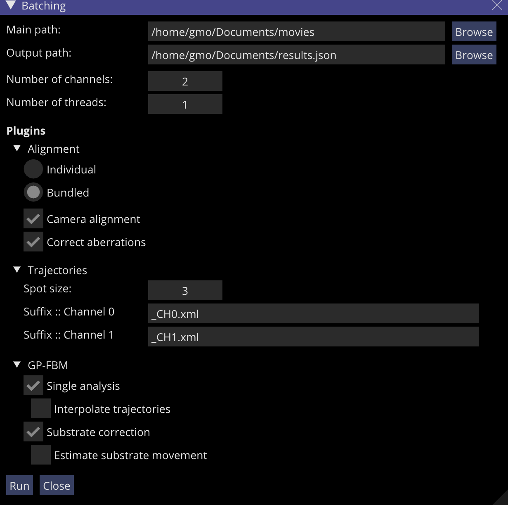

Batching
In order to facilitate the analysis of hundreds of movies at a time, GP-Tool offers the option of batch analysis. For a generic execution, the user can undergo the path "Tools > Batching" or yet the key combination "Ctrl+B". The following window will be presented:
This window presents some initial configurations that need to be set.
- Main path: Address in which .tif files are located. Upon execution, GP-Tool will recursively search for all the movies located within this main path.
- Output path: The file path to which all results will be saved. For convenience, GP-Tool will store all its results in JSON format. Ideally, this file shouldn't exist already, otherwise it will be rewritten.
- Numberof channels: Number of channels present in the movie. It will be later used to setup alignment configurations and number of trajectory files to be loaded.
- Number of threads: Determines the number of movies to be run in parallel. Beware of the amount of RAM present in your computer and the size of each (uncompressed) movie. It is also worth noticing that more threads isn't necessarily faster, as it also depends on the bandwith of your HD when loading multiple movies at the same time.
Once this pre-setup is concluded, we can move on to choose which plugins will be used in the analysis. Only openned plugins will run.
- Alignment: This plugin is only visible when movies present 2 or more channels. There are 2 possible ways to run this plugin: individual and bundled. Individual will run the alignment algorithm for each movie, whilst bundled will collect a few frames from all movies and run altogether. The second option is usually preferred for movies with low signal to noise ratio. The user can also choose which corrections are to be made by checking correspondent boxes.
- Trajectories: In order to run enhancement algorithms, the user must setup initially an expected diameter for tracked spots. After that, the user must determine which suffices are used for track files for each channel. In essence, the batching script will find track files by removing ".tif" from the movie path and replacing by designed suffix. For instance,
- Movie → /home/gmo/Documents/movie.tif
- Suffix :: Channel 0 → _CH0.xml >> /home/gmo/Documents/movie_CH0.xml
- GP-FBM: The user can choose between 2 types of analysis:
- "Single analysis" will calculated diffusion properties for each trajectory individually. The user can also choose to save interpolated trajecotries, that is, GP-FBM will probabilistically assign positions for frames in which the particle is occluded.
- "Substrate correction" can be only used in the situation where multiple trajecotries are loaded. Using movement cross-correlation among all loaded particles, GP-FBM will attempt to correct diffusion parameters for substrate movement assuming that all particles should move independentky other than by a common background. The user can also choose to save the inferred substrate movement.
When all the configurations are properly set, the user can click "Run" at the bottom. Before analysis start, all the implied files will be checked. Are movies corrupted? Are all the track files found? This checking stage can take a few minutes. Once all the files are verified, analysis will begin and a progress bar will be presented in the mailbox ("Tools > Show mailbox" or "Ctrl+M").
C++ API
Even though the graphical interface provided is quite useful, it is also quite generic. For that reason, I propose using the shared C++ libraries containing the API for all the functionality above presented. This libraries can be linked from any C++ code using CMake. You can find here, a template C++ program in which I reproduce in part this generic pipeline used for the graphical interface. Differently, I use my own library called GDManager to store the results.
For the sake of effciency in the case of Windows users, I suggest installing WSL2 (Linux sub-system). On my personal computer, I got an improvement of about 40% in terms of speed.